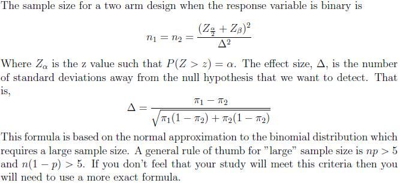

The sample size formula for a binary response variable that is measured once using a two arm design is provided below. The following formula is based on the assumption that we want an equal number of observations in each treatment group.

-- ErinEsp - 08 Mar 2010